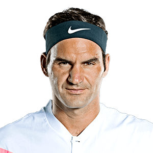

Wimbledon 2017 Statistics
|
Round 1 |
Round 2 |
Round 3 |
Round 4 |
Quarter Finals |
Semi Finals |
Finals |
| Matches Played |
64 |
32 |
16 |
8 |
4 |
2 |
1 |
| 5 Set Matches |
6 |
7 |
2 |
4 |
2 |
0 |
0 |
| 4 Set Matches |
23 |
11 |
2 |
0 |
0 |
1 |
0 |
| 3 Set Matches |
28 |
13 |
11 |
4 |
1 |
1 |
1 |
| Retirements |
7 |
1 |
1 |
0 |
1 |
0 |
0 |
| Sets Played |
222 |
119 |
53 |
32 |
15 |
7 |
3 |
| Tie Break Games |
39 |
23 |
12 |
5 |
4 |
4 |
0 |
| Unforced Errors |
3338 |
1674 |
751 |
408 |
154 |
84 |
31 |
| 1st Serves in |
8233 |
4596 |
2072 |
1346 |
550 |
324 |
107 |
| % 1st Serves in |
62% |
63% |
62% |
67% |
66% |
64% |
67% |
| Total Aces |
1100 |
721 |
305 |
224 |
109 |
60 |
13 |
Total Aces Leaderboard

|
Ivo Karlovic |
12,632 |

|
Rodger Federer |
10,463 |
|
|
Goran Ivanisevic |
10,131 |

|
John Isner |
10,009 |
|
|
Andy Roddick |
9,068 |
Return Games Won

|
|
Rodger Federer |
4,525 |

|
Rafael Nadal |
4,067 |
|
|
David Ferrer |
3,932 |

|
Novak Djokovic |
3,556 |
|
|
Andre Agassi |
3,309 |
Service Games Won
|
|
Rodger Federer |
15,272 |
|
|
Rafael Nadal |
10,487 |
|
|
David Ferrer |
12,609 |
|
|
Novak Djokovic |
11,385 |

|
Tomas Berdych |
11,099 |
% First serves Won
|
|
Ivo Karlovic |
82.75% |
|
|
Goran Ivanisevic |
82.45% |

|
Richard Krajicek |
81.38% |

|
Wayne Arthurs |
81.22% |

|
Milos Raonic |
80.92% |
% Break Points Won

|
Guillermo Coria |
45.71% |
|
|
Sergi Bruguera |
44.96% |
|
|
Rafael Nadal |
44.86% |

|
Thomas Muster |
44.73% |
|
|
Felix Mantilla |
44.55% |